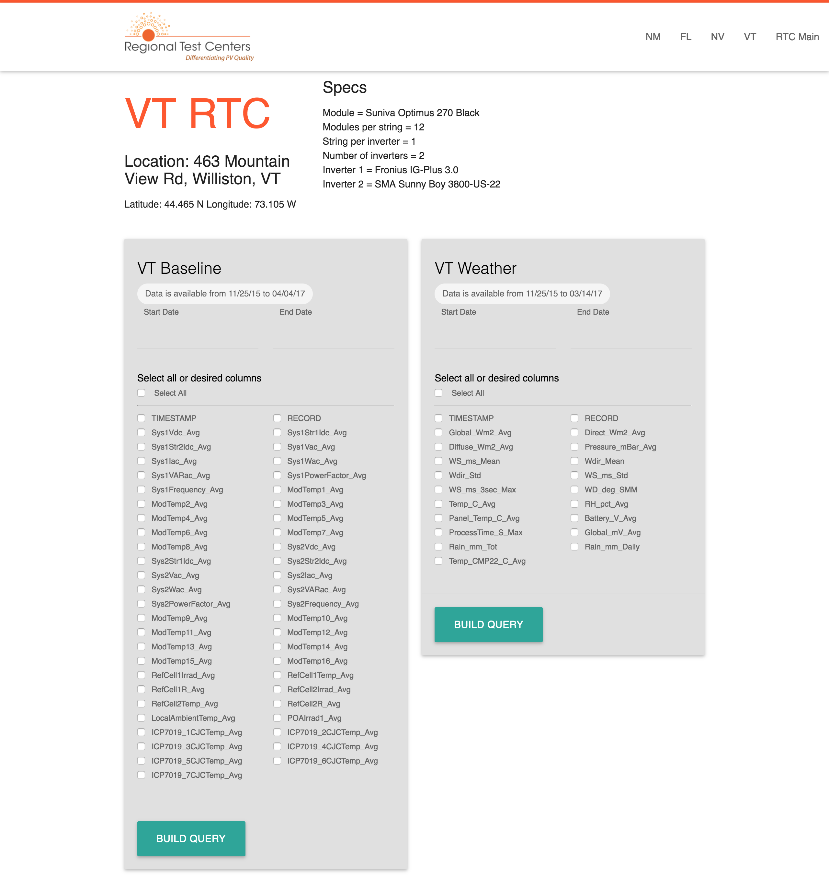

The Idea
Summary
The Department of Energy (DOE) has been federally funding Sandia National Laboratories to provide system field performance and degradation monitoring data via the Regional Test Center (RTC) data project. The RTCs are field sites that test photovoltaic products in a variety of climates and for photovoltaic performance and reliability.
The non-proprietary performance data recorded by the Department of Energy’s Regional Test Centers (RTC) should be publically available. Currently, there is no way to access this data, and the RTC sites are continually gathering a backlog with no path forward to disseminate. The accessibility of this data is critical in demonstrating the value of the RTC program for the PV and greater solar industry within the United States. I created a web-based system that ingests data from all 5 RTC sites to a centralized database that will allow for public downloads and visualizations of data.
The Target Users
Summary
Researchers:
- Highly scientific and technical
- Most have a Ph.D. in their field
- Very familiar with the meaning of data collected by the photovoltaic systems
- Have ideas about displaying data
- Have idea on what type of visualizations will be valuable
- Basic computing skills
Industry:
- Highly technical
- Education varies
- Very familiar with the meaning of data collected by the photovoltaic systems
- Desire proprietary data
- Would like to manipulate dashboards and visualizations
- Basic computing skills
The Problem
Summary
The previous system: The data was compiled and sent to a repository, stored in the form of .dat files. These .dat files were not human-readable and often contained previous day or days of information, leading to an overlap if compared side by side. This data was not easily converted to a usable form such as a CSV, rendering it functionally useless for comparison over time and comparison between systems.
The new system: The system ingests data into a database and allows users a way to export data. The system also contains visualizations of the data that can be manipulated to drill down based on user criteria. This allows for researchers to quickly analyze large and small variances, incomplete data, hardware or system failures, and provide a quick snapshot of the overall performance of a system.
The tasks: Site Info, Export Data, Visualization.
The measures: The success of the system was evaluated based on user perception (System Usability Scale) to register the user’s perceived usability of the system. These scores were contrasted with a Likert scale that asked questions regarding the perceived ease of use. During user testing, user behavior and actions during task scenarios were recorded, which resulted in a task success rate data. Overall engagement of the system was measured based on Google Analytics.
M3: The Design
Summary
Infrastructure: 
Home Page:
Site Page:
Visualization Page:
The Prototype
Summary
Fidelity: The system was developed a high-fidelity web-based prototype. Working in code allows for a fast and iterative process. Since the system was able to access to real data, creating this type of prototype allowed the users to see the interactions more clearly, and doesn’t require them to make their own interpretations of how the system will behave.
Supported Tasks:
- Export data based on a specific set of user-defined criteria.
- Find site specific information such as technical specifications and location.
- Manipulate a visualization of data based on a specific set of user-defined criteria.
Unsupported Tasks:
- Authenticate as an authorized user by using a username and password.
- View a dashboard of performance and reliability data for available systems.
These tasks were not included as it required too much effort for the scope of the project in terms of securing data and setting up authorization and authentication mechanisms. Also, the actual data I was given and used in the prototype did not include the proprietary data that would be required for this portion of the application.
Home Page
Top navigation to the four sites that we hae data for: New Mexico, Florida, Nevada, and Vermont. Links back to the main RTC website. Persistent header. Embedded Google Map with dropped pins locating each of the RTC sites.
Site Page
Details including: location, technical specifications, photos, and climate data. Contains both systems (weather and baseline). Displays system data types.
Query
User can select a date range from either available system. System queries database for limits of available data.
Results
User selects one or more data types and clicks "Build Query." Database builds the query, user's browser will prompt them to save a CSV. The file will reflect the data types as columns and days as rows.
Visualization
Controls for adjusting date range/time. Zooming in or out to increase/decrease focus on a particular set of data. Filter by toggling the specific modules to compare side by side. Users can download a snapshot as PNG, JPG, PDF, or SVG.
Evaluation
Summary
Pre-test: The users were interviewed for demographic data prior to the usability test.
Tested Tasks:
- Find number of modules per string for the RTC site you select.
- Export data as a CSV from an available system based on whatever criteria you select.
- Manipulate a visualization of data.
Post-test:
Users were emailed two links to questionnaires (Usefulness, Satisfaction, and Ease of Use and System Usability Scale) to complete anonymously and without the proctor present to limit the potential bias. The questions for both questionnaires originate from standardized formats.
Results: There were repeated instances of what I assumed to be clear and obvious interactions for the user proving to be not quite so. My naming convention of "Build Query" on the forms for exporting data was a mismatch from the task instruction of "export CSV," which proved to be a stumbling point for all six users tested.
Feature Request: Asked for system definitions in a tooltip
Cosmetic: Was unsure of system definitions purpose, Was confused by error thrown by Excel on CSV open
Minor: Didn't see top navigation on home page, Thought time/temp/etc on visualization page was clickable, Found specs redundant on visualization, Thought colors between two systems were too hard to distinguish
Major: Didn't see data available dates
Must fix: Didn't see start/end date, Issue loading site from map, Didn't realize Build Query would export CSV